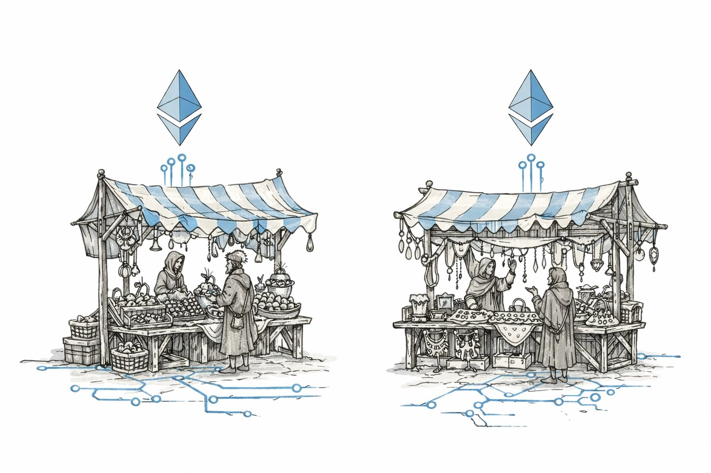
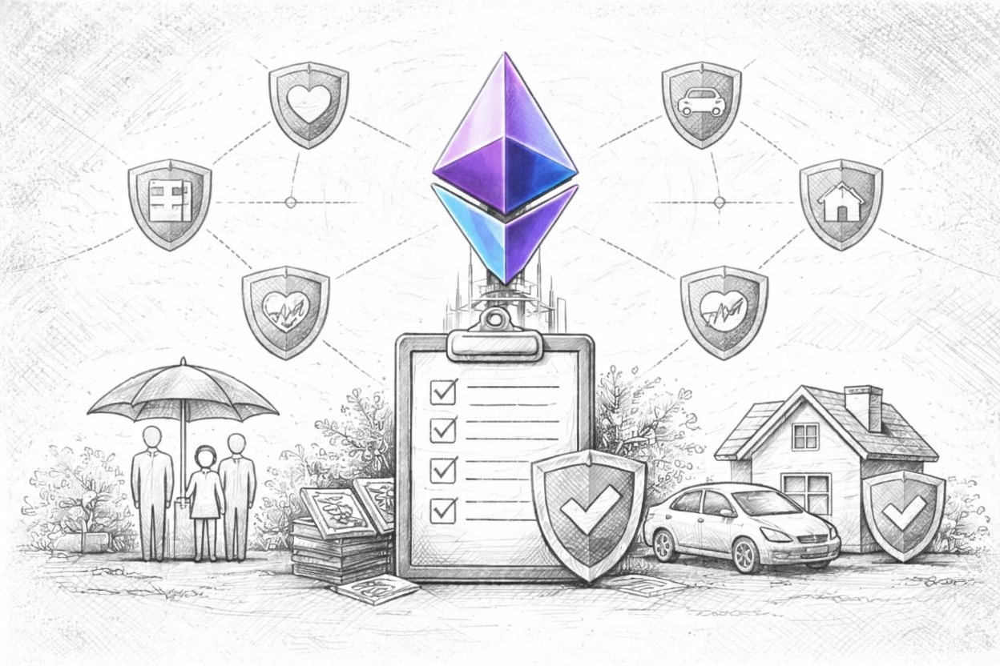
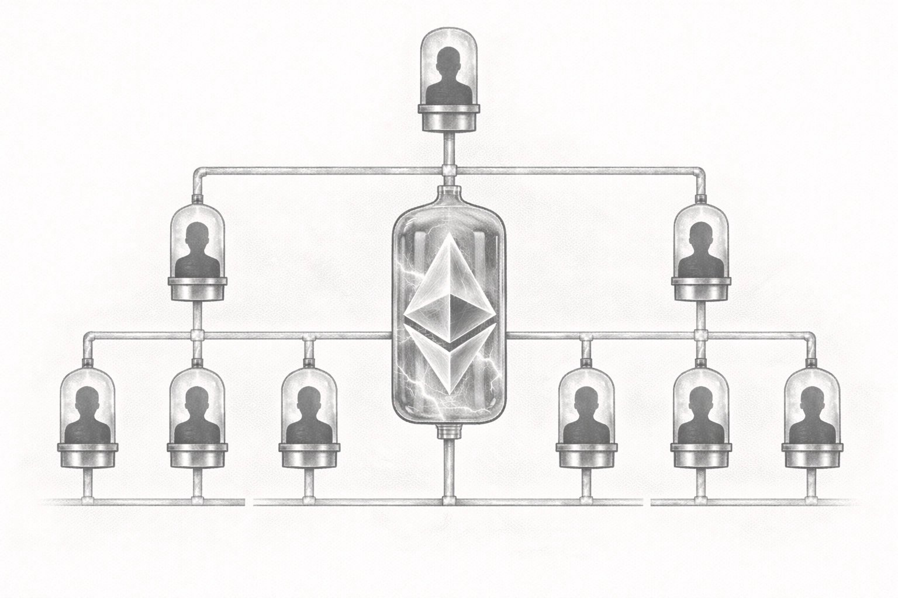
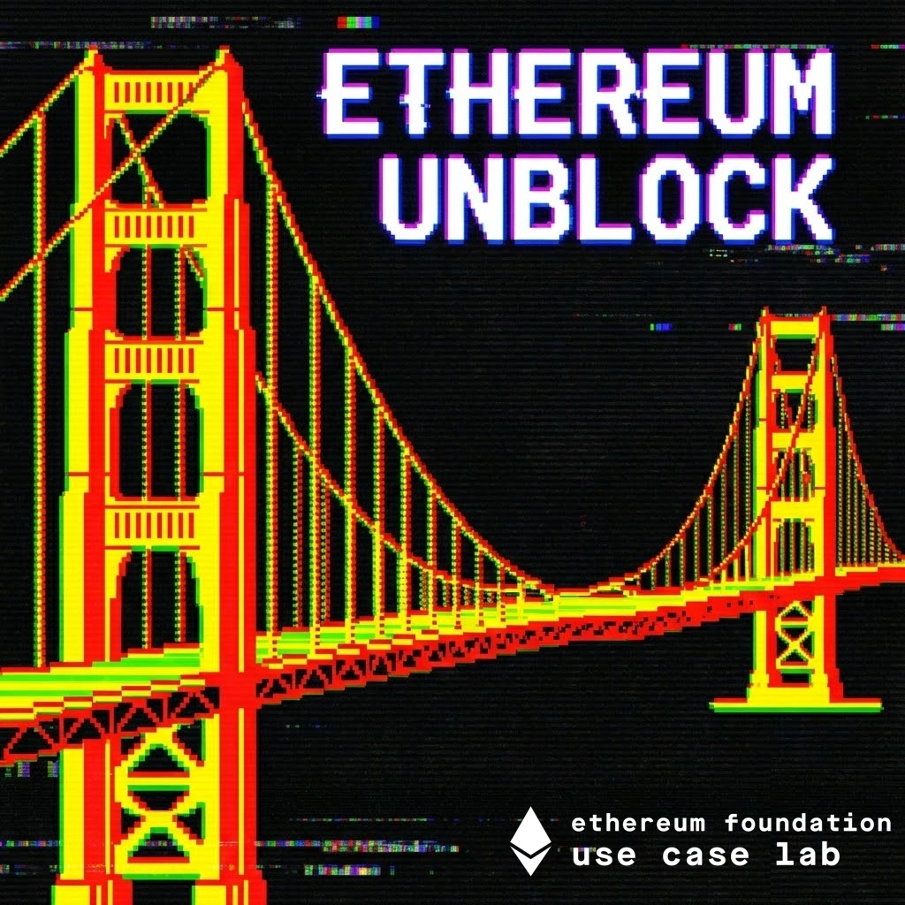

An Ethereum Foundation initiative
Extending self-sovereign coordination to new domains
Use Case Lab identifies domains where people are stuck coordinating through unnecessary intermediaries helps lay the foundation for open alternatives.
Working Hypotheses
Use case hypotheses we're actively exploring with domain experts working at the intersection of their field and Ethereum.
→
Verifiable Cities
Cryptographic technologies in urban systems and municipal services
→
Open Telematics
Ethereum-powered telecommunication & geospatial services

→Composable Commerce
Exchange of real-world goods & services on Ethereum

→Global Insurance
Globally interoperable, on-chain safety nets

→Automated SMEs
Self-executing business processes and agreements
Design Sprints
Intensive collaborative sprints where builders and domain experts prototype solutions to problems no single team would tackle alone.

Upcoming
Ethereum Unblock SF
Five days with Silicon Valley product teams working on the missing pieces — the primitives, protocols, and patterns that multiple real-world use cases need but no single company would build alone.
Register on Luma ↗
Completed
Argentina Onchain
Argentine institutions are experimenting with on-chain coordination faster than almost anyone. We spent two weeks understanding what they need, what's working, and where Ethereum falls short.
Read the report (w/ BlockchainGov) ↗
Get in Touch
If you're working on a real-world use case for Ethereum, we'd like to talk.